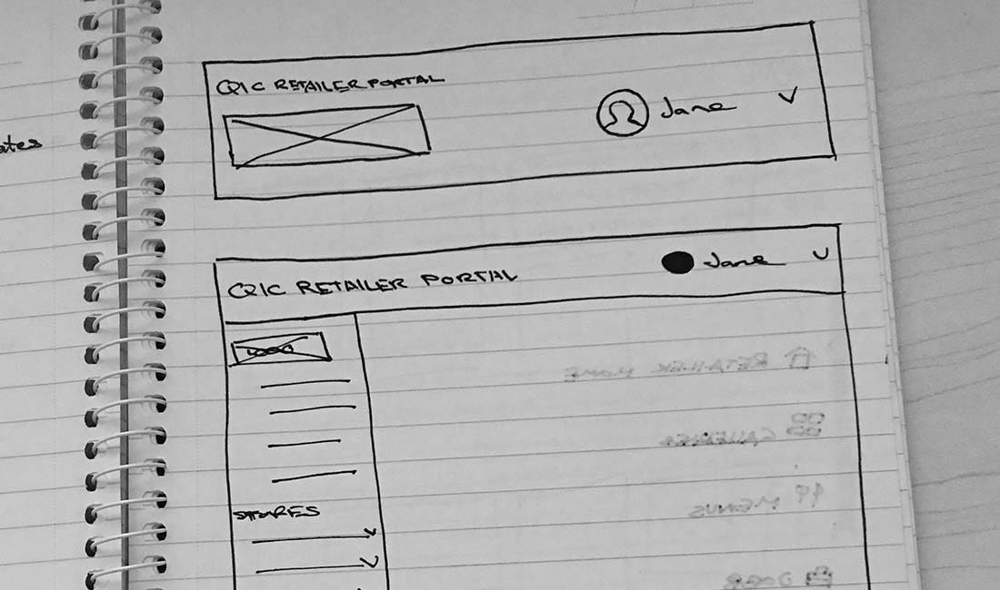

The Process
Bridging brands across platforms
Making the retailer portal a really fluid experience was important to me. I wanted users who came to the portal to feel like they could accomplish any edits they needed to do. This lead me to use a more app-like paradigm which made it easy to accomodate the breadth of options available for a user.



Sketching out various components
It was important for the client that this CMS felt a part of their brand. This really comes through in the use of typography and restricted colour. A baseline grid was also used to fully evoke the rigidity and structure of the QIC brand.